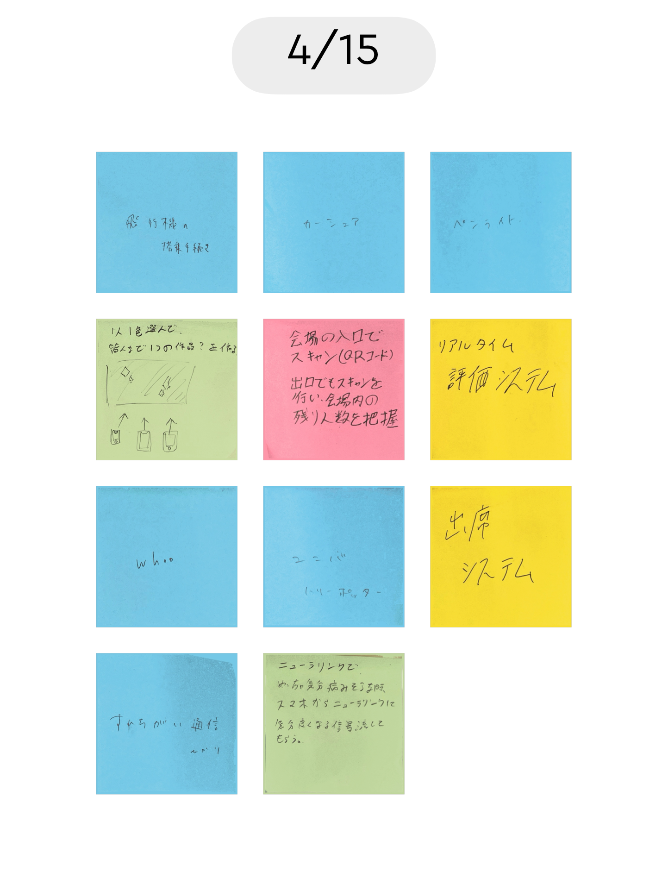

IoT関して
4/15 2024
カテゴリー：課題
IoTとは「Internet of Things」の略で、モノのインターネットと呼ばれます。身の回りの様々なものにインターネット通信機能を搭載した端末のことです。これから先、増えていくと予想されているデバイスです。
IoTを使ったアイデア
自分で考えたアイデア
授業中の理解度チェッカー机ごとにQRコードが割り振られ、黒板にそれに対応したLEDライトが並べられている。
教授の「理解できたか」という問いに対して、理解出来たら赤、出来なかったら青ライトを照らすようにQRコードを読み込んでデータを送れるようにする。